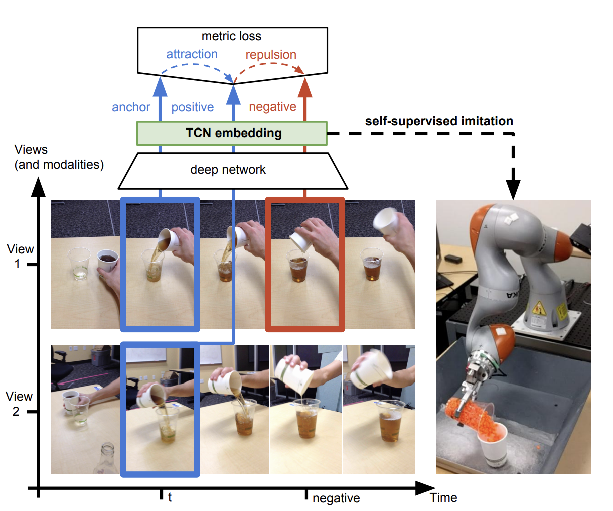

Time-Contrastive Networks: Self-Supervised Learning from Video

Type
Publication
In ICRA 2018
概要
Action recognition におけるSelf-supervisedな事前学習方法の提案。異なる視点から撮った同じアクションにおける同フレームは同じアクションであるとみなせるため，同じフレーム同士は近づけて，ことなるフレームは遠ざけるといったトリプレットな学習方法ができる。
手法
概要図は以下の通り。
異なる視点のビデオを比べたとき，同じタイムスタンプである青フレームはPositive 同士，それに対して赤フレームはNegativeであるといえる。このような設定で学習させることで，同じ行動でもで視点が変わった際の対応関係を学習可能，より頑健なFeature抽出が可能に。
ロス
トリプレットロスとして定義ができる。


データセット
スマートフォンによるマルチビューな撮影

実験
Action Alignment のタスクで評価。

新規性
同時フレームに注目したSelf-supervisedな事前学習方法を提案。